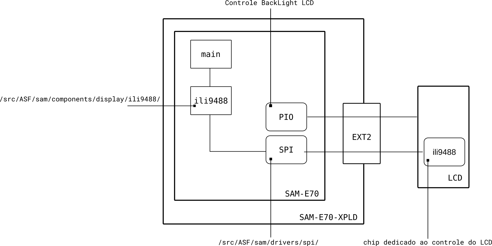
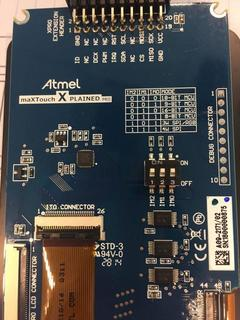
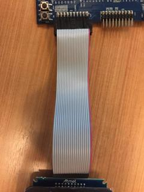
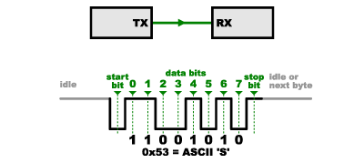
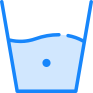
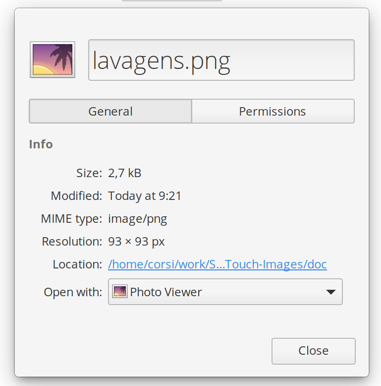
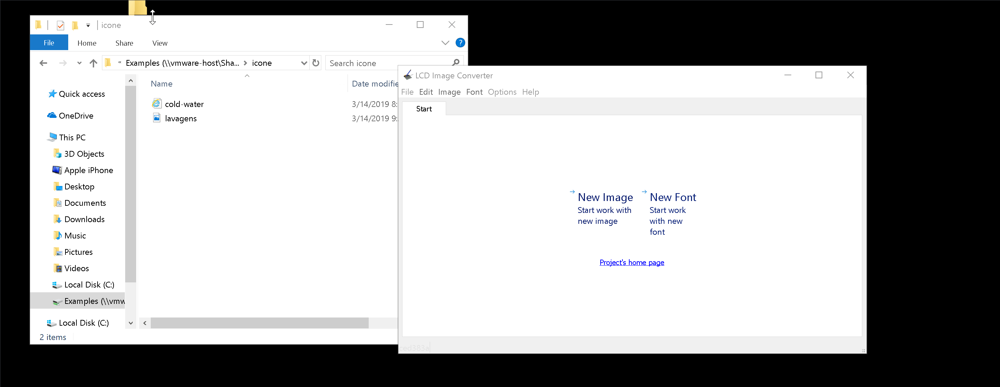
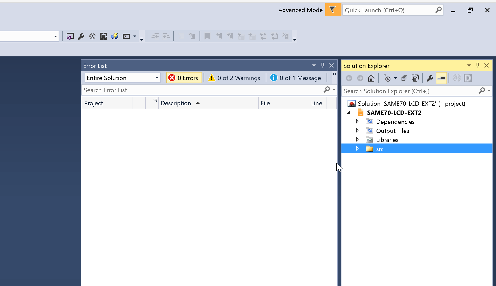

LCD-maXTouch Images¶
Esse exemplo demonstra o controle do módulo de LCD maX Touch X PLAINED PRO via interface SPI (Serial Peripheral Interface Bus).
- Módulos
- LCD maX Touch X PLAINED PRO
- API
- ili9488: Comunicação com o driver do Display
- Periféricos
- USART: Debug via
stdio - SPI: Comunicação com o LCD
- USART: Debug via
- Pinos
- EXT1
Warning
EXT1 possui conflito com alguns pinos do EXT2

Note
Esse diagrama não possui a parte referente ao touch do LCD
Propriedades do LCD¶
- Colorido
- RGB, 8 bits por cor
- Resolução de: 320x480
Conexão e configuração¶
Deve-se configurar o módulo do LCD para operar via SPI via o dip switch localizado na parte de traz do módulo, como na imagem a baixo:

Para conectar o LCD no EXT2, deve-se seguir a referência de polaridade do flat cable a baixo :

USART¶
- BaudRate: 115200
- StopBit: 1 bit
- Paridade: 0 bit
- Data: 8 bits
Utilizado como debug do programa, deve-se utilizar um terminal (exe. putty) no computador para acessar o printf realizado no firmware.
SPI¶
- BaudRate : 20000000
- 8 bits
O Serial Peripheral Interface Bus (SPI) é uma maneira serial de dois dispositivos (ou chips) se comunicarem, o SPI é amplamente utilizado pela industria e diversos sensores e atuadores o utilizam com forma de comunicação.

O SPI possui as seguintes configurações :
- Síncrono
- Barramento diferenciado de dados de entradsaída
- Serial
Para mais informações acesse o site da sparkfun: SPI SparkFun
O SPI é utilizado pela API ili9488 para acessar e configurar o LCD.
ili9488 (controlador LCD)¶
O ili9488 é um CI dedicado ao controle do LCD integrado no módulo LCD maX Touch X PLAINED PRO, a comunicação do microcontrolador com o LCD é via a interface com o ili9488. Esse dispositivo é responsável por :
- Acionar independente cada pixel (RGB) e fazer o acionamento (analógico)
- fazer o refresh no LCD (atualizar os pixels a uma taxa fixa)
- Receber novos valores para os pixels
- ...
Os comandos de comunicação com o ili9488 são definidos na bibliotecasrc/ASF/sam/components/display/ili9488/. Essa biblioteca possui também alguns comandos gráficos simples tais como :
uint32_t ili9488_draw_pixel(uint32_t ul_x, uint32_t ul_y); void ili9488_draw_line(uint32_t ul_x1, uint32_t ul_y1, uint32_t ul_x2, uint32_t ul_y2); void ili9488_draw_rectangle(uint32_t ul_x1, uint32_t ul_y1, uint32_t ul_x2, uint32_t ul_y2); void ili9488_draw_filled_rectangle(uint32_t ul_x1, uint32_t ul_y1, uint32_t ul_x2, uint32_t ul_y2); uint32_t ili9488_draw_circle(uint32_t ul_x, uint32_t ul_y, uint32_t ul_r); uint32_t ili9488_draw_filled_circle(uint32_t ul_x, uint32_t ul_y, uint32_t ul_r);
RGB¶
O ili9488 está configurado nesse exemplo para operar em modo RGB, as cores são definidas do tipo ili9488_color_t e possuem formato RGB, sendo 8 bits para definir a intensidade de cada cor, como nos exemplos a seguir :
#define COLOR_BLUE (0x0000FFu) #define COLOR_GREEN (0x00FF00u) #define COLOR_RED (0xFF0000u) #define COLOR_NAVY (0x000080u) #define COLOR_DARKCYAN (0x008B8Bu) #define COLOR_TURQUOISE (0x40E0D0u)
Porém esse formato deve ser convertido para a transmissão, via a macro: COLOR\_CONVERT. Exemplo :
ili9488_set_foreground_color(COLOR_CONVERT(COLOR_WHITE));
Carregando uma imagem no LCD¶
Para conseguirmos atualizar o LCD com uma imagem pré definida será necessário convertermos essa imagem para o padrão de pixels definido na secção anterior e depois alocarmos essa imagem em uma constante para que o microcontrolador possa enviar ao ili9488.
Passos :
- Definir a imagem na dimensão correta (em pixels)
- Converter a imagem para o formato do LCD gerar um vetor de pxs
- Gerar um arquivo .h para ser incluído no projeto 1.. Ler o arquivo .h e atualizar o LCD via a interface com ili9488
Para isso iremos utilizar o programa lcd-image-converter, fazer o download e instalar (windows)/
1 - Escolhendo imagem¶
Vamos colocar o icone a seguir no LCD:

Salve o arquivo no PC: lavagens.png, repare que essa imagem possui dimissão de: 93x93pxs.

2 Gerando .h¶

- Abra o
lcd-image-converter
File New image- name:
lavagens
- name:
Image Import- Abra o
lavagens.png
- Abra o
Options Conversion Import Color R8G8B8.xml Preset= R8G8B8 Ok- Arquivo de config. fornecido nesse tutorial
File Convert...- name:
lavagens.h
- name:
Os passos anteriores convertem a imagem (lavagens.png) para um vetor de pixels (lavagens.h) utilizando a configuração R8G8B8. O arquivo lavagens.h possui:
tImage¶
Uma struct do tipo tImage comentada que será utilizada para salvar informações da imagem:
*data: Ponteiro para a imagem (vetor)width: Largura da imagem (em px)height: Altura da imagem (em px)dataSize: Tipo do dado do*data
tImage deve fazer parte do código porém só pode aparecer uma única definição! Sugestão: copiar descomentada para o cabeçalho main.c e deixar comentada nos arquivos .h.
lavagens.h
/* typedef struct { const uint8_t *data; uint16_t width; uint16_t height; uint8_t dataSize; } tImage;
main.c
#include "asf.h" #include <string.h> #include <stdio.h> #include <stdlib.h> #include "ioport.h" +typedef struct { + const uint8_t *data; + uint16_t width; + uint16_t height; + uint8_t dataSize; + } tImage;
Vetor de pxs¶
O arquivo .h gerado possui a declaração do vetor onde a imagem será salva.
static const uint8_t image_data_lavagem[25947] = { 0x9b, 0xcb, 0xfd, 0x22, 0x8c, ....
tImage lavagem¶
No final do arquivo possuimos a inicialização de uma struct tImage com os parâmetros dessa imagem. Isso será utilizado pelo
nosso código quando formos utilizar essa imagem.
const tImage lavagem = { image_data_lavagem, 93, 93, 8 };
Usando a imagem¶
- Adicionar arquivo
lavagens.hao projeto - Incluindo arquivo no
main - Usar funções do driver para desenhar no LCD
Adionando ao projeto¶
Agora é necessário adicionarmos o arquivo lavagens.h ao projeto. Com o exemplo do LCD aberto no Atmel Studio:

Solution Explorer Botão Direitoemsrc Add New Folder- Nome:
icones
- Nome:
- Arrastar
lavagens.hpara dentro da pasta criadaicones
Incluindo no main¶
Edite o main.c para incluir o arquivo lavagens.h, isso precisa ser feito após a definição do tImage:
typedef struct {
const uint8_t *data;
uint16_t width;
uint16_t height;
uint8_t dataSize;
} tImage;
+#include "iconelavagens.h"
Desenhando no LCD¶
Temos algumas opções para desenhar a imagem no LCD:
- Atualizar o LCD pixel a pixel com os dados contidos no vetor
-
pouco eficiente, o LCD demorará para atualizar a imagem
-
Fazermos uma transferência direta de memória entre o uc e o ili9488 (burst)
- mais eficiente e melhor método.
Para implementarmos a transferência direta de memória é necessário configurarmos a região do LCD que será atualizado, para isso
utilizaremos a função ili9488\_draw\_pixmap que possui implementa uma atualização parcial de uma região de memória do LCD. A implementação da funcão está na biblioteca do ili9488 e copiado a baixo:
```C ** * \brief Draw a pixmap on LCD. * * \param ul_x X coordinate of upper-left corner on LCD. * \param ul_y Y coordinate of upper-left corner on LCD. * \param ul_width width of the picture. * \param ul_height height of the picture. * \param p_ul_pixmap pixmap of the image.
void ili9488_draw_pixmap(uint32_t ul_x, uint32_t ul_y, uint32_t ul_width, uint32_t ul_height, const ili9488_color_t *p_ul_pixmap) { uint32_t size; uint32_t dwX1, dwY1, dwX2, dwY2; dwX1 = ul_x; dwY1 = ul_y; dwX2 = ul_x + ul_width - 1; dwY2 = ul_y + ul_height - 1;
-
Swap coordinates if necessary */ ili9488_check_box_coordinates(&dwX1, &dwY1, &dwX2, &dwY2);
-
Determine the refresh window area */ ili9488_set_window(dwX1, dwY1, (dwX2 - dwX1 + 1), (dwY2 - dwY1 + 1)); size = (dwX2 - dwX1) * (dwY2 - dwY1);
ili9488_write_register(ILI9488_CMD_MEMORY_WRITE, p_ul_pixmap, size * LCD_DATA_COLOR_UNIT);
- Reset the refresh window area */ ili9488_set_window(0, 0, ILI9488_LCD_WIDTH, ILI9488_LCD_HEIGHT); } ```
Para usarmos essa função, basta a chamarmos com os parâmetros da imagem que desejamos desenhar. Insira no main logo antes do while(1):
```diff ili9488_set_foreground_color(COLOR_CONVERT(COLOR_BLACK)); sprintf(stingLCD, "Computacao Embarcada %d", 2018); ili9488_draw_string(0, 50, stingLCD);
+/ desenha imagem lavagem na posicao X=80 e Y=150 + ili9488_draw_pixmap(80, 150, lavagem.width, lavagem.height, lavagem.data); ```